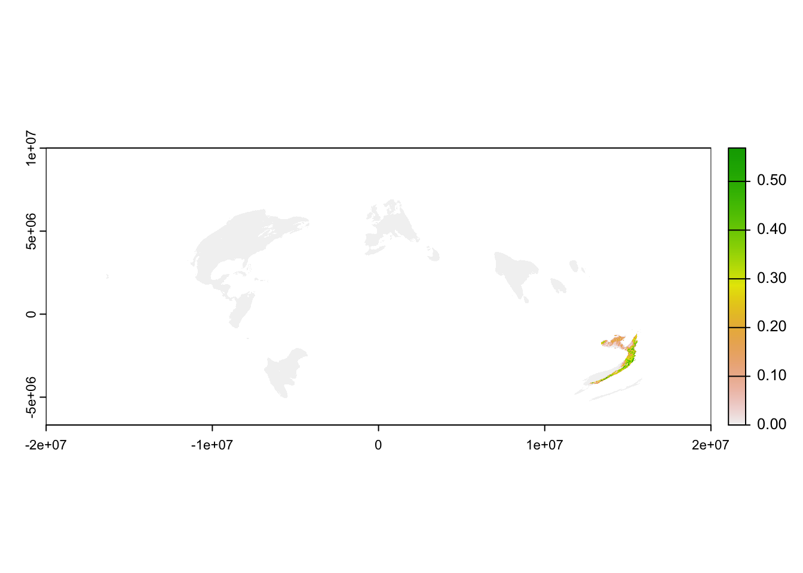
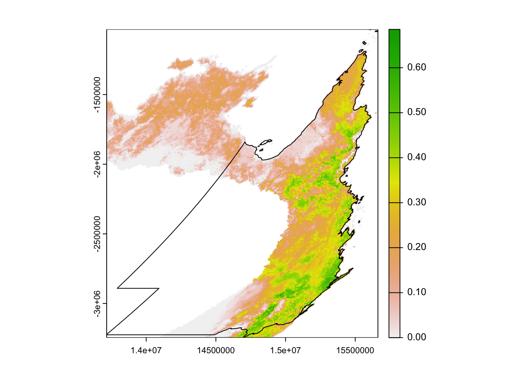

library(dplyr)
library(ebirdst)
library(terra)
library(sf)2 Appendix
Auxiliary materials for the workshop.
2.0.1 Expert review
All species go through a process of expert human review prior to being released. The ebirdst_runs data frame also contains information from this review process. Reviewers assess each of the four seasons: breeding, non-breeding, pre-breeding migration, and post-breeding migration. Resident (i.e., non-migratory) species are identified by having TRUE in the is_resident column of ebirdst_runs, and these species are assessed across the whole year rather than seasonally. ebirdst_runs contains two important pieces of information for each season: a quality rating and seasonal dates.
The seasonal dates define the weeks that fall within each season; the relative abundance estimates for these weeks get averaged to produce the seasonal relative abundance maps on the Status and Trends website. Breeding and non-breeding season dates are defined for each species as the weeks during those seasons when the species’ population does not move. For this reason, these seasons are also described as stationary periods. Migration periods are defined as the periods of movement between the stationary non-breeding and breeding seasons. Note that for many species these migratory periods include not only movement from breeding grounds to non-breeding grounds, but also post-breeding dispersal, molt migration, and other movements.
Reviewers also examine the model estimates for each season to assess the amount of extrapolation or omission present in the model, and assign an associated quality rating ranging from 0 (lowest quality) to 3 (highest quality). Extrapolation refers to cases where the model predicts occurrence where the species is known to be absent, while omission refers to the model failing to predict occurrence where a species is known to be present.
A rating of 0 implies this season failed review and model results should not be used at all for this period. Ratings of 1-3 correspond to a gradient of more to less extrapolation and/or omission, and we often use a traffic light analogy when referring to them:
- Red light (1): low quality, extensive extrapolation and/or omission and noise, but at least some regions have estimates that are accurate; can be used with caution in certain regions.
- Yellow light (2): medium quality, some extrapolation and/or omission; use with caution.
- Green light (3): high quality, very little or no extrapolation and/or omission; these seasons can be safely used.
2.1 Loading data in R
In this workshop, we’ll focus on the raster data products, which can all be loaded into R using the ebirdst function load_raster(). In R, we’ll use the terra package to work with raster data. Raster data products fall into two broad categories providing weekly and seasonal estimates.
2.1.1 Weekly raster estimates
The core raster data products are the weekly estimates of occurrence, count, relative abundance, and percent of population. All estimates are the median expected value for a 1km, 2 hour eBird Traveling Count by an expert eBird observer at the optimal time of day and for optimal weather conditions to observe the given species.
- Occurrence
occurrence: the expected probability of encountering a species. - Count
count: the expected count of a species, conditional on its occurrence at the given location. - Relative abundance
abundance: the expected relative abundance of a species, computed as the product of the probability of occurrence and the count conditional on occurrence. In addition to the median relative abundance, upper and lower confidence intervals (CIs) are provided, defined at the 10th and 90th quantile of relative abundance, respectively. - Proportion of population
proportion-population: the proportion of the total relative abundance within each cell. This is a derived product calculated by dividing each cell value in the relative abundance raster by the sum of all cell values
All predictions are made on a standard 2.96km x 2.96km global grid, however, for convenience lower resolution GeoTIFFs are also provided, which are typically much faster to work with. The three resolutions are:
- High resolution (
3km): the native 2.96 km resolution data - Medium resolution (
9km): the high resolution data aggregated by a factor of 3 in each direction resulting in a resolution of 8.89 km - Low resolution (
27km): the high resolution data aggregated by a factor of 9 in each direction resulting in a resolution of 26.7 km
The weekly cubes use the following naming convention:
weekly/<species_code>_<product>_<metric>_<resolution>_<year>.tif
where metric is typically median, except for the relative abundance CIs, which use lower and upper. The function load_raster() is used to load these data into R and takes arguments for product, metric and resolution. For example, to load the high resolution weekly median relative abundance, use
abd_median_hr <- load_raster("Leaden Flycatcher", product = "abundance",
period = "weekly", resolution = "9km")
print(abd_median_hr)
#> class : SpatRaster
#> dimensions : 1877, 4504, 52 (nrow, ncol, nlyr)
#> resolution : 8888, 8888 (x, y)
#> extent : -2e+07, 2e+07, -6676023, 1e+07 (xmin, xmax, ymin, ymax)
#> coord. ref. : +proj=sinu +lon_0=0 +x_0=0 +y_0=0 +R=6371007.181 +units=m +no_defs
#> source : leafly2_abundance_median_9km_2022.tif
#> names : 2022-01-04, 2022-01-11, 2022-01-18, 2022-01-25, 2022-02-01, 2022-02-08, ...
#> min values : 0.000, 0.000, 0.000, 0.000, 0.000, 0.000, ...
#> max values : 0.927, 0.891, 0.881, 0.854, 0.772, 0.593, ...We often refer to these raster objects as “weekly cubes” (e.g. the “weekly abundance cube”). Notice that the cubes contains 52 layers, corresponding to the weeks of the year. The layer names are the dates associated with the mid-point of each week.
as.Date(names(abd_median_hr))
#> [1] "2022-01-04" "2022-01-11" "2022-01-18" "2022-01-25" "2022-02-01"
#> [6] "2022-02-08" "2022-02-15" "2022-02-22" "2022-03-01" "2022-03-08"
#> [11] "2022-03-15" "2022-03-22" "2022-03-29" "2022-04-05" "2022-04-12"
#> [16] "2022-04-19" "2022-04-26" "2022-05-03" "2022-05-10" "2022-05-17"
#> [21] "2022-05-24" "2022-05-31" "2022-06-07" "2022-06-14" "2022-06-21"
#> [26] "2022-06-28" "2022-07-05" "2022-07-12" "2022-07-19" "2022-07-26"
#> [31] "2022-08-02" "2022-08-09" "2022-08-16" "2022-08-23" "2022-08-30"
#> [36] "2022-09-06" "2022-09-13" "2022-09-20" "2022-09-27" "2022-10-04"
#> [41] "2022-10-11" "2022-10-18" "2022-10-25" "2022-11-01" "2022-11-08"
#> [46] "2022-11-15" "2022-11-22" "2022-11-29" "2022-12-06" "2022-12-13"
#> [51] "2022-12-20" "2022-12-27"As another example, we could load the low resolution upper and lower abundance confidence intervals.
abd_lower_lr <- load_raster("Leaden Flycatcher", product = "abundance",
period = "weekly", metric = "lower",
resolution = "27km")
abd_upper_lr <- load_raster("Leaden Flycatcher", product = "abundance",
period = "weekly", metric = "upper",
resolution = "27km")2.1.2 Seasonal raster estimates
The seasonal raster estimates are provided for the same set of products and at the same three resolutions as the weekly estimates. They’re derived from the weekly data by taking the cell-wise mean or max across the weeks within each season. Recall that the seasonal boundary dates are available in the data frame ebirdst_runs; data is not provided for seasons with a quality score of 0.
The seasonal GeoTIFFs use the following naming convention:
seasonal/<species_code>_<product>_seasonal_<metric>_<resolution>_<year>.tif
where metric is either mean or max. The function load_raster(period = "seasonal") is used to load these data into R and takes arguments for product, metric and resolution. For example, to load the low resolution mean seasonal relative abundance, use
abd_seasonal_mean <- load_raster("Leaden Flycatcher", product = "abundance",
period = "seasonal", metric = "mean",
resolution = "27km")
print(abd_seasonal_mean)
#> class : SpatRaster
#> dimensions : 626, 1502, 4 (nrow, ncol, nlyr)
#> resolution : 26665, 26665 (x, y)
#> extent : -2e+07, 2e+07, -6684911, 1e+07 (xmin, xmax, ymin, ymax)
#> coord. ref. : +proj=sinu +lon_0=0 +x_0=0 +y_0=0 +R=6371007.181 +units=m +no_defs
#> source : leafly2_abundance_seasonal_mean_27km_2022.tif
#> names : breeding, nonbreeding, prebree~gration, postbre~gration
#> min values : 0.00, 0.000, 0.000, 0.000
#> max values : 0.55, 0.914, 0.539, 0.501Notice there are four layers in this raster corresponding to the four seasons.
names(abd_seasonal_mean)
#> [1] "breeding" "nonbreeding" "prebreeding_migration"
#> [4] "postbreeding_migration"Finally, as a convenience, the data products include year-round rasters summarizing the mean or max across all weeks that fall within a season that passed the expert review process. These can be accessed similarly to the seasonal products, just with period = "full-year" instead. For example, these layers can be used in conservation planning to assess the most important sites across the full range and full annual cycle of a species.
abd_fy_max <- load_raster("Leaden Flycatcher", product = "abundance",
period = "full-year", metric = "max",
resolution = "9km")2.2 Exploring the raster data
Let’s load the low resolution weekly and seasonal relative abundance cubes and use them to demonstrate some basic raster operations with the data.
abd_weekly <- load_raster("Leaden Flycatcher", product = "abundance",
period = "weekly", resolution = "9km")
abd_seasonal <- load_raster("Leaden Flycatcher", product = "abundance",
period = "seasonal", resolution = "9km")These cubes can easily be subset to a single week or season.
# week of may 17
abd_weekly[["2022-05-17"]]
#> class : SpatRaster
#> dimensions : 1877, 4504, 1 (nrow, ncol, nlyr)
#> resolution : 8888, 8888 (x, y)
#> extent : -2e+07, 2e+07, -6676023, 1e+07 (xmin, xmax, ymin, ymax)
#> coord. ref. : +proj=sinu +lon_0=0 +x_0=0 +y_0=0 +R=6371007.181 +units=m +no_defs
#> source : leafly2_abundance_median_9km_2022.tif
#> name : 2022-05-17
#> min value : 0.000
#> max value : 0.934
# breeding season
abd_seasonal[["breeding"]]
#> class : SpatRaster
#> dimensions : 1877, 4504, 1 (nrow, ncol, nlyr)
#> resolution : 8888, 8888 (x, y)
#> extent : -2e+07, 2e+07, -6676023, 1e+07 (xmin, xmax, ymin, ymax)
#> coord. ref. : +proj=sinu +lon_0=0 +x_0=0 +y_0=0 +R=6371007.181 +units=m +no_defs
#> source : leafly2_abundance_seasonal_mean_9km_2022.tif
#> name : breeding
#> min value : 0.000
#> max value : 0.823We can also subset the weekly cube to a range of weeks. For example, let’s subset to only the estimates for weeks in May, then take the average across the weeks.
# determine which dates we want to include
week_dates <- as.Date(names(abd_weekly))
start_date <- as.Date("2022-05-01")
end_date <- as.Date("2022-05-31")
week_in_may <- week_dates >= start_date & week_dates <= end_date
# subset to weeks in may
abd_weekly_may <- abd_weekly[[week_in_may]]
# average across weeks
mean(abd_weekly_may, na.rm = TRUE)
#> class : SpatRaster
#> dimensions : 1877, 4504, 1 (nrow, ncol, nlyr)
#> resolution : 8888, 8888 (x, y)
#> extent : -2e+07, 2e+07, -6676023, 1e+07 (xmin, xmax, ymin, ymax)
#> coord. ref. : +proj=sinu +lon_0=0 +x_0=0 +y_0=0 +R=6371007.181 +units=m +no_defs
#> source(s) : memory
#> name : mean
#> min value : 0.000
#> max value : 0.845Making a simple map of the data will produce unexpected results. For example, let’s map the breeding season relative abundance for Green-backed Firecrown.
plot(abd_seasonal[["breeding"]])
Recall that all eBird Status data products are provided for the entire globe, regardless of the range of the species. Also, notice that some areas, such as most of the Amazon Basin, have missing values indicating that there was insufficient data to make a prediction in the region. Other areas, such as North America, had sufficient data to predict that the species is absent. Let’s try using the GIS data included in the workshop data package to crop the raster to Queensland to make a more meaningful map.
# Queensland boundary, projected to match the raster data
qld <- read_sf("data/gis-data.gpkg", layer = "regions") %>%
filter(state_code == "AU-QLD") %>%
st_transform(crs = crs(abd_seasonal)) %>%
st_geometry()
# crop raster data to chile
abd_breeding_qld <- crop(abd_seasonal[["breeding"]], qld)
# map
plot(abd_breeding_qld)
plot(qld, add = TRUE)
Checkpoint
Let’s take a break before proceeding onto some more realistic applications of the eBird Status data products. Make sure you’re comfortable loading the data into R and performing some of the basic operations.